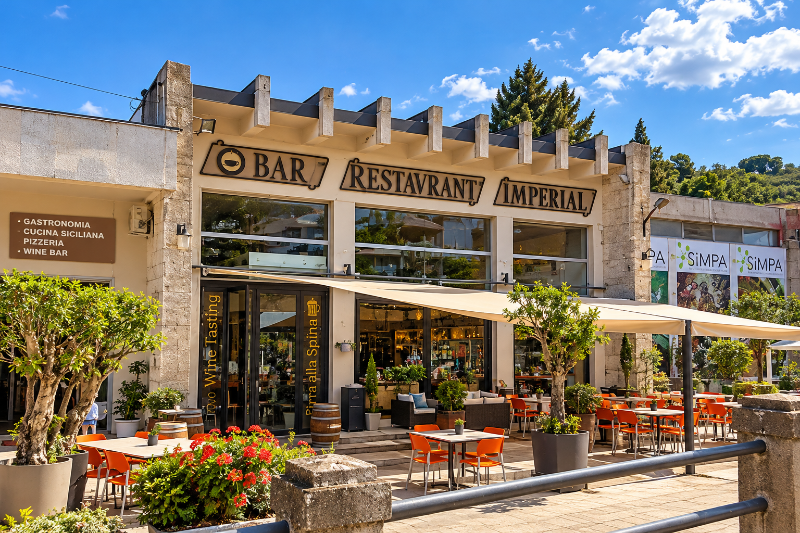
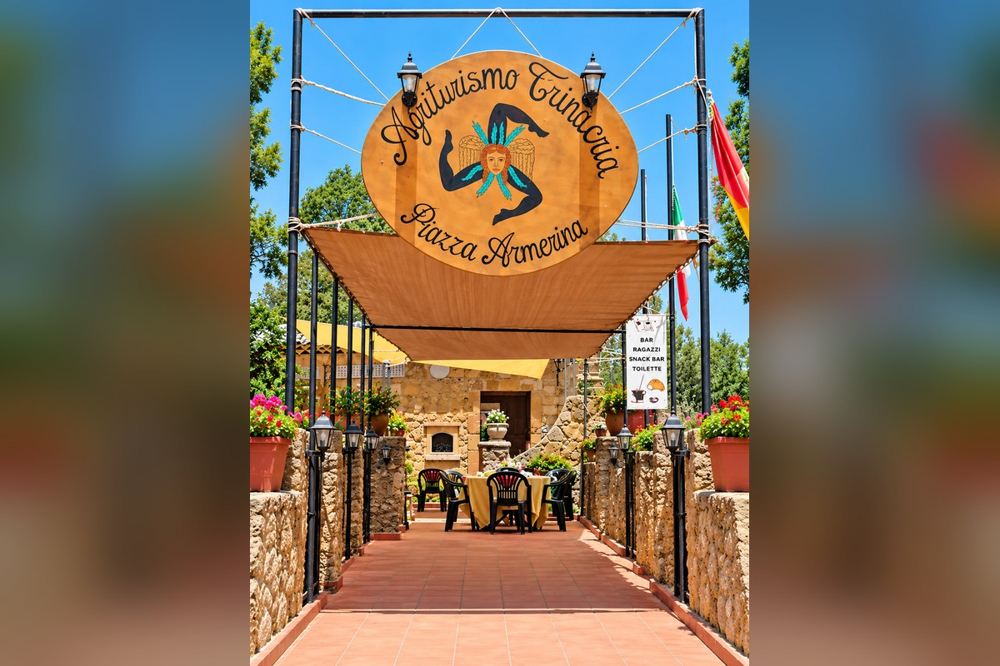
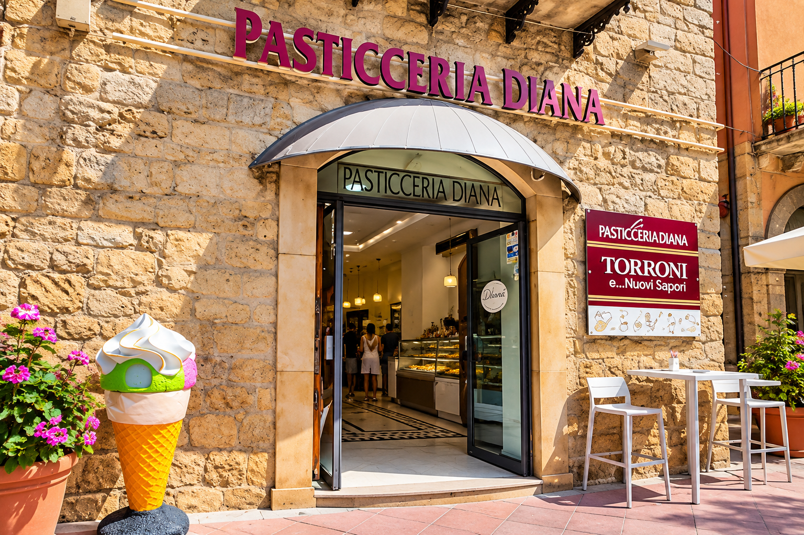

☕
Nell’area commerciale del parcheggio
Chioschi e bar della Villa
Per una pausa veloce: caffè, bibite, snack e specialità da asporto. I nomi dei singoli chioschi saranno completati dopo verifica.
📍 Come arrivare su Google Maps ↗Dalla Villa Romana al cuore della città: eventi, sapori, natura e itinerari su misura.
Il prototipo raccoglie cultura, eventi, natura, ristorazione e informazioni pratiche. In futuro potrà diventare il servizio digitale di accoglienza turistica di Piazza Armerina, aggiornato con Comune e operatori.
Scegli cosa scoprire: ogni pulsante apre la sua sezione.
Un viaggio di oltre 1.700 anni tra storia, arte e vita quotidiana dell'antica Roma.

Costruita nel IV secolo d.C. nei pressi di Piazza Armerina, era il centro di una grande proprietà agricola e una residenza di straordinario prestigio. I suoi mosaici raccontano cacce, miti, giochi e scene di vita dell'epoca.
Gli scavi sistematici iniziarono nel 1950 sotto la direzione dell'archeologo Gino Vinicio Gentili. Dal 1997 è Patrimonio Mondiale UNESCO.
Fotografia: Wikimedia Commons · autore e licenzaIl proprietario resta un mistero. In passato si pensava a un imperatore; oggi gli studiosi propendono per un personaggio molto ricco e influente dell'aristocrazia romana, forse di rango senatorio. Nessuna identificazione è definitiva.
 Fotografia reale · autore e licenza su Wikimedia Commons
Fotografia reale · autore e licenza su Wikimedia CommonsUn accesso scenografico, con cortile e fontane, pensato per impressionare gli ospiti fin dal loro arrivo.
 Fotografia reale · autore e licenza su Wikimedia Commons
Fotografia reale · autore e licenza su Wikimedia CommonsGli ambienti dedicati al bagno e al benessere, con spazi a diverse temperature: un piccolo mondo di comfort romano.

Il cuore della Villa: un ampio cortile porticato con fontana centrale, circondato da stanze riccamente decorate.
Fotografia: Wikimedia Commons · autore e licenza
Uno spettacolare mosaico che racconta la cattura e il trasporto di animali esotici destinati agli spettacoli dell'Impero.
Fotografia: Wikimedia Commons · autore e licenza💡 Lo sapevi che? La scena mostra soprattutto la cattura e il trasporto di animali vivi.

Dieci giovani atlete praticano esercizi e gare sportive in uno dei mosaici più sorprendenti della Villa.
💡 Lo sapevi che? Questi indumenti erano abiti per l’attività sportiva, non costumi da bagno.
Fotografia: Wikimedia Commons · autore e licenza Fotografia reale · autore e licenza su Wikimedia Commons
Fotografia reale · autore e licenza su Wikimedia CommonsSale di soggiorno e ambienti di rappresentanza, dove l'architettura e i mosaici esprimevano la ricchezza e il prestigio del proprietario.
Gli spazi dei banchetti e dell'ospitalità, impreziositi da grandi scene mitologiche.
Segui la segnaletica ufficiale per il parcheggio autorizzato con barriere, evitando la strada riservata agli autorizzati.
Segui il percorso pedonale segnalato verso l'ingresso del sito archeologico.
Testi introduttivi basati su fonti UNESCO e del Parco archeologico. Le descrizioni non sostituiscono una visita guidata.
Informazioni di accesso fornite dal gestore. Questa demo non sostituisce la segnaletica stradale.
Hai ammirato i mosaici della Villa Romana del Casale? A pochi chilometri ti aspetta un'altra bellezza: una città da scoprire lentamente, con il naso all'insù.
Lascia l'auto, entra nel centro storico e guarda in alto: balconi in ferro battuto, portali scolpiti, campanili, archi e palazzi nobiliari si nascondono tra vicoli e scalinate.
.jpg?width=1280)
Il suo fascino nasce dall'incontro tra l'impianto medievale, le testimonianze normanne e gli edifici rinascimentali e barocchi. Non è un museo all'aperto immobile: è una città da vivere, un angolo alla volta.
Fotografia: Wikimedia Commons · autore e licenza
Per secoli fu conosciuta come Piazza; l'aggiunta di Armerina risale all'Ottocento. Le origini del nome più antico sono oggetto di interpretazioni storiche: una curiosità da cui iniziare la visita.
Fotografia: Wikimedia Commons · autore e licenzaUn itinerario da gustare senza fretta, tra scorci, piazze e una pausa per un caffè o un gelato.

Il cuore cittadino: facciate eleganti, atmosfera di paese e un tratto pedonale di Via Garibaldi. Un buon punto di partenza.
📍 Vedi su Google Maps ↗Fotografia: Wikimedia Commons · autore e licenza
Lasciati incuriosire da portali, balconi e stradine che salgono verso la parte più antica della città. Qui il bello è anche il percorso.
Fotografia: Wikimedia Commons · autore e licenza
La grande cupola e la piazza monumentale regalano uno degli scorci più suggestivi di Piazza Armerina.
📍 Vedi su Google Maps ↗Fotografia: Wikimedia Commons · autore e licenza💡 Lo sapevi che? Il campanile conserva elementi della chiesa più antica.

Accanto alla Cattedrale, un palazzo nobiliare del Settecento che racconta un'altra faccia della storia cittadina.
📍 Vedi su Google Maps ↗Fotografia: Wikimedia Commons · autore e licenza
Per chi ama camminare: vicoli medievali, scalinate e piccoli dettagli architettonici che meritano una fotografia.
Fotografia: Wikimedia Commons · autore e licenzaUn punto di sosta da valutare per raggiungere il centro a piedi. Prima di partire, controlla disponibilità, eventuali restrizioni e il tragitto a piedi.
📍 Apri la posizione ↗Percorso indicativo: la viabilità, i confini delle aree pedonali e l'accessibilità delle salite sono da verificare prima della pubblicazione definitiva.
Informazioni per raggiungere la Villa Romana del Casale e spostarsi verso Piazza Armerina.
Consulta subito le istruzioni per il parcheggio dei visitatori.
Dal parcheggio segui il percorso pedonale verso l’ingresso della Villa.
Qui troverai fermate e orari della navetta, una volta verificati.
Orari e collegamenti saranno inseriti solo dopo verifica.
Dal caffè accanto ai mosaici alla cucina tipica di Piazza Armerina: scegli cosa ti va e scopri dove andare.
Per una pausa veloce: caffè, bibite, snack e specialità da asporto. I nomi dei singoli chioschi saranno completati dopo verifica.
📍 Come arrivare su Google Maps ↗
Punto ristoro a pochi passi dal percorso di visita, per una sosta prima o dopo i mosaici.
📍 Come arrivare su Google Maps ↗
Proposte siciliane veloci, tra cui pane cunzato e preparazioni da asporto.
📍 Come arrivare su Google Maps ↗
Cucina siciliana e piatti del territorio, in un contesto rurale vicino al sito archeologico.
📍 Come arrivare su Google Maps ↗
Trattoria di cucina casalinga siciliana, in un antico mulino nella campagna.
📍 Come arrivare su Google Maps ↗
Una sosta per scoprire ricette e sapori della cucina siciliana.
📍 Come arrivare su Google Maps ↗
Cucina legata al territorio in un ambiente con giardino, nel centro storico.
📍 Come arrivare su Google Maps ↗Ristorante e pizzeria nel centro cittadino, per un pranzo o una cena.
📍 Come arrivare su Google Maps ↗
Pizza in stile napoletano e proposte da pizzeria.
📍 Come arrivare su Google Maps ↗
Pizza e specialità da tavola calda, anche per uno spuntino informale.
📍 Come arrivare su Google Maps ↗
Pizza, snack siciliani e cocktail nel centro storico.
📍 Come arrivare su Google Maps ↗
Dolci siciliani, gelato e una pausa al bar in piazza.
📍 Come arrivare su Google Maps ↗Prima visione: foto delle attività e ulteriori locali saranno aggiunti dopo verifica delle immagini e dei dettagli. Consulta Google Maps per orari e apertura.
Una selezione di appuntamenti autunnali e un assaggio del programma estivo già pubblicato.

La Combriccola del Blasco, tributo a Vasco Rossi. Appuntamento segnalato nella rassegna autunnale; verificare luogo e orario nel programma dell’organizzatore.
Apri fonte e programma ↗
Mostra segnalata tra Villa Romana del Casale e Palazzo Trigona. Prima della visita controlla apertura e modalità di accesso.
Apri fonte e programma ↗
Spettacolo segnalato nel calendario locale. Verifica direttamente date, orari e biglietti.
Apri fonte e programma ↗
Tre giornate annunciate nella rassegna Barock Off, fra scambi culturali e musica.
Apri fonte e programma ↗
Concerto annunciato al Teatro Garibaldi, ore 21, nel programma della rassegna.
Apri fonte e programma ↗
Archivio degli eventi già svolti: dimostra quanto potremo offrire durante la stagione alta. Concerti, teatro, spettacoli e appuntamenti alla Villa Romana e in città.
Archivio storico: non sono eventi futuri.
Vedi il programma dell’estate 2026 ↗📅 Questa è una selezione dimostrativa, non un calendario ufficiale né un aggiornamento automatico in tempo reale. Le date e le eventuali modifiche vanno sempre confermate dagli organizzatori.
Un altro volto del territorio: verde, cammini e soste nella natura.

Un’idea per chi cerca verde, relax e passeggiate nel territorio. Controlla accessibilità, meteo e servizi prima di partire.
Trova su Maps ↗
Boschi e percorsi per chi ama camminare. Non sono indicati tracciati verificati per escursioni o camper.
Trova su Maps ↗
Natura e paesaggi nei dintorni di Piazza Armerina, per una visita da organizzare con le indicazioni degli enti competenti.
Trova su Maps ↗
Uno dei luoghi naturali del territorio da scoprire con le dovute verifiche sulle possibilità di accesso.
Trova su Maps ↗Fonte territoriale: Comune di Piazza Armerina.
Piazza Armerina può essere diversa per ciascun visitatore.
Scegli ciò che ti piace e scopri subito le sezioni più utili.
Prototipo: il suggerimento apre la sezione scelta. Gli itinerari personalizzati e i percorsi verificati saranno sviluppati successivamente.
Informazioni pratiche per una visita più semplice.
Stiamo preparando percorsi di accesso verificati sul posto, con indicazioni distinte per auto, camper e motorhome. Fino alla verifica non suggeriamo scorciatoie o strade non adatte.
Chioschi della Villa, trattorie, pizzerie, bar e pasticcerie: scopri le attività nella sezione Dove mangiare.
Per Catania, Siracusa e Noto apri le mappe e scegli il percorso adatto al tuo veicolo. Per camper grandi, controlla sempre limiti e accessi; i percorsi specifici saranno verificati prima della pubblicazione.
Il prototipo raccoglie informazioni da fonti pubbliche. In una versione convenzionata, il Comune e gli organizzatori potranno inviarci direttamente aggiornamenti e programmi.
Sito del Comune ↗